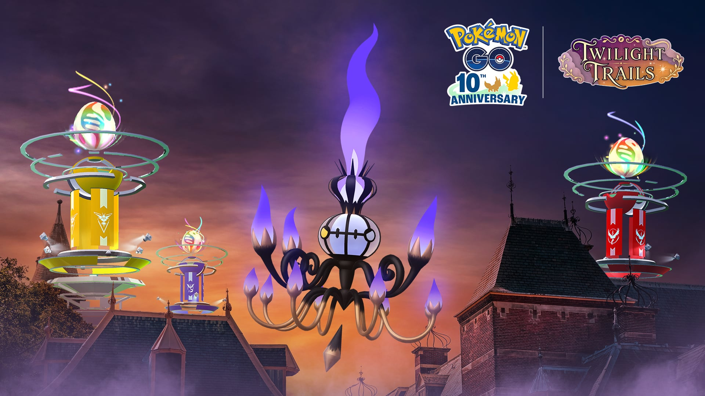
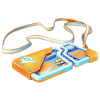
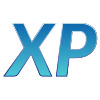
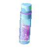

포켓몬 GO 샹델라 슈퍼 메가 레이드 데이 레이드패스 무료 6개 vs 티켓 14개, 뭐가 다를까 (2026)
공지에서 레이드패스 문구가 서로 다른 항목에 두 번 나오는데요, 무료와 티켓이 헷갈리기 쉬워요. 10월 31일 토요일 한국시간 14시부터 17시까지 열리는 샹델라 슈퍼 메가 레이드 데이는 체육관 포토디스크로 패스를 받는 방식이 무료와 티켓에서 갈리거든요~ 이 글에서는 무료 최대 6개와 티켓 최대 14개가 공지 문장 그대로 무엇이 다른지만 짚어 볼게요. 표 한 장으로 맞춰 본 다음, 어느 쪽이 맞는지 고르는 순서로 갈게요.

이벤트 대표 이미지예요. 샹델라와 체육관이 같이 나와요
©Niantic ©Pokémon/Nintendo/Creatures/GAME FREAK, 이미지 출처 · leekduck.com 이벤트 페이지
무료로도 레이드패스를 최대 6개 받을 수 있나요
네, 체육관의 포토디스크를 돌리면 무료로 레이드패스를 최대 6개까지 받는다고 공식 공지에 적혀 있어요.
공지 한국어판은 «이벤트 보너스»와 «이벤트 티켓» 두 항목으로 나눠 적었고, 두 항목에 포토디스크 문장이 하나씩 들어 있어요. 무료 문구는 이벤트 보너스 목록에 들어 있고, 티켓이 없어도 해당돼요. 이 6개의 적용 시간은 표 아래 «공지에 적히지 않은 것»에서 한꺼번에 정리할게요. 같은 무료 보너스에는 이날 슈퍼 메가 레이드에서 잡은 샹델라가 메가레벨 1단계에 이미 도달해 있고, 색이 다른 샹델라를 만날 확률이 늘어난다는 항목도 함께 있어요.

무료 레이드패스 아이콘이에요
©Niantic ©Pokémon/Nintendo/Creatures/GAME FREAK, 이미지 출처 · leekduck.com 이벤트 페이지
포토디스크를 돌리면 레이드패스가 이렇게 쌓여요
$4.99 이벤트 티켓은 패스 14개 말고 뭘 더 주나요
티켓은 포토디스크 레이드패스 최대 14개에 이상한사탕XL 확률 증가, 5,000 XP, 별의모래 5,000개를 얹어 주고, 티켓 추가 보너스(이상한사탕XL·XP·별의모래)는 한국시간 14시부터 17시까지 켜져요.


왼쪽부터 이상한사탕XL, XP, 별의모래 아이콘이에요
©Niantic ©Pokémon/Nintendo/Creatures/GAME FREAK, 이미지 출처 · leekduck.com 이벤트 페이지
XP 5,000은 슈퍼 메가 레이드를 돌 때 붙는 추가분이고, 이상한사탕XL은 레이드배틀에서 나올 확률이 올라가는 쪽이에요. 아래 표에서 무료와 티켓을 한 줄씩 맞춰 보세요.
| 구분 | 무료 이벤트 보너스 | 이벤트 티켓 |
|---|---|---|
| 레이드패스(포토디스크) | 최대 6개 | 최대 14개 |
| 이상한사탕XL | 없음 | 레이드배틀에서 나올 확률 증가 |
| 슈퍼 메가 레이드 XP | 없음 | 5,000 XP 추가 |
| 별의모래 | 없음 | 5,000개 추가 |
| 보너스 적용 시간 | 포토디스크 6개는 별도 표기 없음 | 한국시간 10월 31일 14:00~17:00 |
| 가격 | 무료 | $4.99(또는 동일 가치의 현지 통화) |
표에서 무료 칸이 «없음»인 줄은 무료 이벤트 보너스 항목에 해당 문구가 없다는 뜻이에요. 티켓 14개가 무료 6개를 포함한 숫자라면 차이는 8개인데요, 공지에는 최대 14개라는 표현뿐이라 이 점은 아래에 따로 적어 뒀어요.
- 무료 6개가 14시부터 17시에만 적용되는지 종일인지: 인게임 이벤트 화면에서 확인
- 티켓 14개가 무료 6개를 포함한 숫자인지 대체하는 숫자인지
- 이상한사탕XL의 정해진 개수, 포토디스크 한 번에 나오는 패스 수와 하루 횟수
티켓은 언제까지 어디서 사고, 환불은 되나요
티켓은 10월 31일 한국시간 17시까지 게임 내 숍에서만 살 수 있고, 포켓코인으로는 못 사며 환불도 원칙적으로 안 돼요(법률 및 이용규약의 예외 조항에 따름).
웹스토어에서 파는 «샹델라 슈퍼 메가 레이드 데이 하이퍼 티켓 박스»를 사면 프리미엄 배틀패스가 무료로 같이 들어온다는 문구도 공지에 있어요. 그레이트 프렌드 이상인 친구에게는 선물도 할 수 있습니다. 환불이 원칙적으로 안 되니 가격과 보너스 시간대를 보고 결정하는 게 좋아요. 이벤트가 끝나는 17시 직전에 사면 보너스를 쓸 시간이 거의 없다는 점도 같이 떠올려 보시면 좋겠어요.
티켓이 필요한 사람과 무료로 충분한 사람은 누구인가요
이날 슈퍼 메가 레이드를 한꺼번에 많이 돌 계획이면 티켓이 맞고, 몇 판만 돌 생각이라면 무료 6개로 시작해도 돼요.
티켓 14개가 무료 6개를 포함한 숫자라면 차이는 8개예요. 패스가 그만큼 더 있으면 슈퍼 메가 레이드를 더 돌 수 있고, 그 판마다 티켓에 붙는 추가 XP와 별의모래도 같이 챙기게 되니 티켓 쪽이 의미가 있네요. 반대로 한두 판만 돌 사람은 이 보너스를 쓸 기회 자체가 적습니다. 보너스가 켜지는 시간은 세 시간뿐이라서, 그 안에 몇 판을 돌 수 있는지 미리 세어 보는 것이 판단의 출발점이에요. 저는 일정이 빠듯한 토요일이라면 무료 패스로 먼저 도는 쪽이 마음 편할 것 같아요ㅎㅎ
같이 도는 친구가 있다면 그레이트 프렌드 이상일 때 티켓을 선물할 수 있다는 점도 판단에 넣어 볼 만해요. 나는 무료로 돌고, 많이 도는 친구에게 티켓을 건네는 식으로 나눌 수도 있겠죠.
같은 날 챙길 만한 리모트 레이드 한도와 괴상한바람+
리모트 레이드는 이날 20회까지 가능하고, 기간은 한국시간 10월 31일 9시부터 11월 1일 12시까지예요.
보너스 시간(14시~17시)보다 리모트 한도의 기간이 훨씬 길다는 점이 눈에 띄어요. 현장에서 도는 판은 오후 세 시간에 몰고, 리모트 20회는 이 기간 안에서 쓰는 한도예요. 메가샹델라의 스페셜 어택 «괴상한바람+»는 체육관·레이드에서 위력 145, 트레이너 배틀에서는 위력 50이며 메가레벨이 오르면 위력이 더 올라가요.
이벤트가 끝난 뒤에는 글로벌 챌린지 결과에 따른 보너스가 이어져요.
- 글로벌 챌린지 결과에 따른 메가샹델라 보너스: 한국시간 11월 3일 5시부터 11월 16일 5시까지
- 메가레벨 1단계 이상이면 괴상한바람+ 기본 위력이 강화돼요. 강화 정도는 챌린지 완료 단계에 따라 달라지고, GO배틀리그에는 적용되지 않아요
자주 묻는 질문
Q. 무료 6개는 티켓이 없어도 받나요?
네, 이벤트 보너스 목록에 들어 있는 항목이라 티켓 없이 체육관 포토디스크를 돌려 받아요.
Q. 티켓 가격이 원화로 얼마예요?
공지 표기는 $4.99(또는 동일 가치의 현지 통화)예요. 원화 금액은 구매 화면에 뜨는 현지 금액으로 확인하시면 돼요.
Q. 이 내용은 바뀔 수도 있나요?
이 글은 10월 16일에 확인한 공지를 기준으로 썼어요. 이벤트까지 2주 가까이 남아 있어서 공지가 고쳐질 수 있으니, 10월 31일 가까워지면 공식 뉴스를 한 번 더 보시는 게 좋겠어요.
포켓몬 GO 샹델라 슈퍼 메가 레이드 데이 한 줄 정리
패스 6개 대 14개에 사탕XL·XP·별의모래가 얹히는 구조라서, 이날 많이 돌 분이라면 티켓을 고려해 볼 만해요. 다들 즐겜하세요!
참고한 곳 (2026.10.16 확인 기준)
· 포켓몬 GO 공식 뉴스 — 샹델라 슈퍼 메가 레이드 데이
· Leek Duck — Chandelure Super Mega Raid Day
✔ 포켓몬 GO 같이 보기 좋은 내용
· 포켓몬고 지가르데 셀 루트 완료 리워드로 받는 법, 맵에서 안 모아도 되고 확률은 그대로
· 포켓몬 GO 깜눈크 부화데이 10월 17일 11시부터 17시, 알 부화 거리 절반 보너스 챙기는 법
· 포켓몬고 그푸리 처음 만나는 법, 가을 소풍 GO패스 패스 태스크와 향로 출현 기간 10월 13일부터